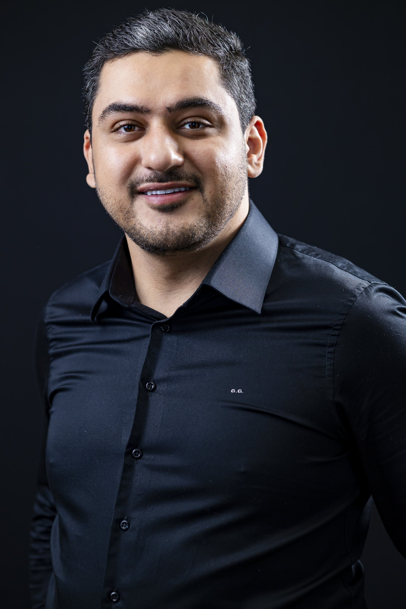

01
Radix entomolaris
Sempre respeitando a variação anatômica de cada paciente.
Soluções em endodontia
Conte com um parceiro dedicado à endodontia para atender às necessidades dos seus pacientes, diretamente na sua clínica.
Precisão técnica, planejamento individualizado e foco na preservação dentária.
Estrutura completa
Levo os equipamentos necessários para a realização dos procedimentos endodônticos, integrando tecnologia e organização à estrutura do consultório parceiro.
Diferenciais
Técnicas criteriosas e atenção ao paciente para proporcionar uma experiência de atendimento mais confortável.
Cada paciente é único. A conduta clínica considera suas necessidades e as particularidades de cada caso.
Planejamento detalhado e explicações claras para que o paciente compreenda o diagnóstico, a causa do problema e as possibilidades de tratamento.
O uso da magnificação auxilia na visualização de detalhes anatômicos e na condução de casos complexos, favorecendo uma abordagem clínica mais precisa.
Casos clínicos
Radiografias de casos realizados, do diagnóstico à obturação final. Toque em uma imagem para ampliar.
Sempre respeitando a variação anatômica de cada paciente.
Sempre proservando os casos para acompanhamento de sucesso.
Casos com planejamento respeitando a necessidade de cada paciente.
Segurança contra futuras reinfecções.
Traz segurança e precisão na execução dos casos.
Técnicas de reposicionamento radiográfico para conferência de todos os canais que estavam sobrepostos.

Como funciona a parceria
O dentista parceiro realiza a avaliação inicial e conta com minha disponibilidade para esclarecer dúvidas e discutir o caso.
Organizo o atendimento o mais breve possível, com tempo médio de espera de até um dia, conforme a agenda.
Realizo a avaliação clínica, solicito os exames complementares necessários, alinho o plano de tratamento com você quando indicado e executo a etapa endodôntica.
Acompanho o pós-operatório diretamente com o paciente e envio a você um relatório detalhado do procedimento realizado.
Após a etapa endodôntica, o paciente retorna à sua clínica para dar continuidade ao plano de tratamento.
Uma parceria que valoriza seu paciente e respeita o seu trabalho.
Para encaminhar um paciente
Preencha e envie. A radiografia você anexa na própria conversa.
Os atendimentos de urgência são destinados aos pacientes com dor, edema ou outras manifestações que pedem avaliação e intervenção em tempo oportuno.
A conduta é definida pelo diagnóstico e pelas condições clínicas, buscando controlar os sintomas e tratar a causa sempre que possível. Quando o tratamento definitivo não puder ser feito naquele momento, pode ser indicada uma abordagem provisória.
Em casos de maior complexidade, como variações anatômicas relevantes, suspeita de trinca ou fratura radicular, lesões endoperiodontais e retratamentos que exigem investigação adicional.
A solicitação é individualizada, considerando o quanto o exame contribui para o planejamento, o prognóstico e a decisão clínica.
Ao final de cada procedimento, envio um relatório com as informações clínicas, a descrição do tratamento realizado e as orientações para a continuidade do cuidado, pelo WhatsApp ou no sistema digital da clínica.
Também podemos criar um grupo de WhatsApp com você e sua secretária para organizar agendamentos e discutir casos.
Como o atendimento envolve deslocamento e preparo da estrutura, peço a confirmação com pelo menos 8 horas de antecedência. Em caso de falta após a confirmação, pode ser aplicada uma taxa de deslocamento, conforme a política combinada antes do início dos atendimentos.
Mesmo com planejamento criterioso, alguns casos podem exigir recursos adicionais, como a remoção de um instrumento fraturado. Nessas situações conversamos sobre as alternativas e a melhor conduta para o paciente, e qualquer custo adicional é combinado antes, com transparência.
Os valores e prazos de cada atendimento são definidos previamente entre nós, e a cobrança dos honorários é feita diretamente com o dentista parceiro, nunca com o paciente.
A parceria é formalizada em um contrato de prestação de serviços, com as condições de atendimento e as responsabilidades de cada profissional.
O que dizem os dentistas parceiros
“Trabalhar com ele transmite confiança e tranquilidade. É um profissional responsável, ético e cuidadoso, que leva cada caso a sério e demonstra compromisso tanto com o resultado do tratamento quanto com o bem-estar do paciente.”
“É um profissional extremamente dedicado, criterioso e comprometido com a qualidade dos procedimentos. Demonstra segurança na condução dos casos, atenção aos detalhes e muito cuidado na busca pelas melhores soluções para cada paciente.”
“Um dos seus grandes diferenciais é a organização e o profissionalismo. Conduz os atendimentos com planejamento, pontualidade e atenção aos protocolos, tornando a parceria mais eficiente e contribuindo para uma rotina clínica bem estruturada.”
“Além da competência técnica, destaco sua facilidade de comunicação e disposição para trabalhar em conjunto. É acessível, transparente nas discussões clínicas e cuidadoso ao alinhar as condutas, o que fortalece a confiança entre os profissionais.”

Sobre mim
Sou cirurgião-dentista com atuação direcionada à Endodontia, pautada pela precisão técnica, pelo planejamento individualizado e pelo uso da tecnologia como aliada da prática clínica.
Mantenho o compromisso com o aperfeiçoamento técnico e a atualização científica, buscando uma atuação fundamentada em evidências. Preservar dentes naturais significa contribuir para a saúde bucal e para a continuidade de reabilitações odontológicas.
Meu trabalho une rigor técnico e atenção ao paciente, valorizando o conforto durante o atendimento, a comunicação clara e a construção de relações de confiança com pacientes e dentistas parceiros.
Sua clínica. Seu paciente. Nossa parceria em Endodontia.
Leve a Endodontia especializada até sua clínica, com praticidade, precisão técnica e comunicação profissional. Entre em contato para conhecer o modelo de atendimento e alinharmos as condições da parceria.
Rua José Leonel Vilela, 67 – Centro, Alpinópolis/MG
Atendimento em clínicas de Alpinópolis/MG, Ribeirão Preto/SP e região
